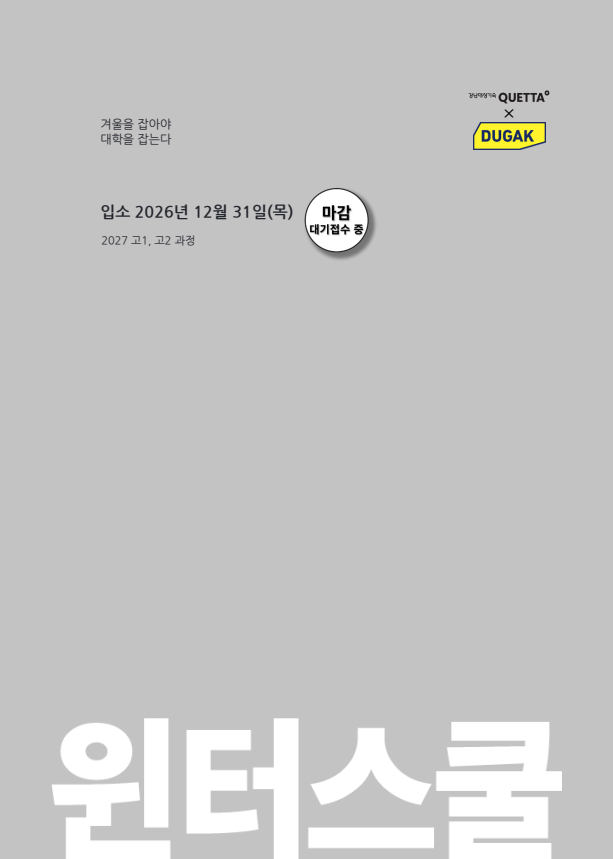

수강료 잔금 2,945,900원 + 독서실비 148,500원. 독서실비의 개인별 안내문상 납부기한은 ‘추후 안내’이므로 11월 납부 안내에서 최종 확인하세요.
온라인 접수만으로 등록되지 않습니다. 예비교습비 700,000원 납부와 등록 완료 문자 수신을 확인하세요.
준비 타임라인
완료 체크는 이 브라우저에 저장됩니다. 납부와 검사는 실제 완료 후 체크하세요.
비용 및 납부
| 항목 | 금액 |
|---|---|
| 교습비 | 1,452,900원 |
| 식비 | 900,000원 |
| 기숙사비 | 1,293,000원 |
| 수강료 합계 | 3,645,900원 |
| 예비교습비(합계에 포함) | 700,000원 |
| 수강료 잔금 | 2,945,900원 |
| 1인 1독서실 · 퀀텀 라이브러리 | 148,500원 |
| 확정 비용 합계 | 3,794,400원 |
| 예비교습비 납부 후 남은 확정 금액 | 3,094,400원 |
| 교재비 / 단체복비 | 추후 안내 |
‘남은 금액’은 예비교습비가 이미 납부된 경우의 계산입니다. 현재 납부 상태를 뜻하지 않습니다.
항목별 납부 안내
- 수강료: 신한은행 개인별 가상계좌. 계좌번호는 개인 납부안내문 확인. 예비교습비 납부 순으로 선착순 마감.
- 잔금: 11.20~11.24 완납 시 최종 등록 완료.
- 독서실비: 148,500원, 개인 안내문의 기한은 추후 안내. 모집요강은 11.24 마감으로 안내.
- 교재: 강남대성수능연구소 발행 수업 교재. 금액·계좌·기한은 수강료 완납자에게 12월 중순 안내.
- 단체복: 상·하의 각 1벌, 후드집업 1벌. ㈜플랜비커머스, 금액·계좌·기한 추후 안내.
- 계좌 입금 후 카드 결제로 변경하려면 학원에 문의.
- 가상계좌 납부 시 접수 때 입력한 현금영수증 처리번호로 자동 발급. 홈택스 조회.
가족 할인 신청(해당자)
고1·고2 형제자매 동시 등록 또는 최근 3년 이내 퀘타 윈터 3주 이상 재원한 본인·형제자매는 교습비 10%, 퀘타 정규시즌 6개월 이상 또는 반수시즌 수료자의 형제자매는 교습비 30% 할인 대상입니다. 전체 수강료가 아닌 교습비 기준이며 대상 여부는 학원 확인이 필요합니다.
campusk@dshw.co.kr로 신청 학생 성명·생년월일, 이전 재원생 성명·기간과 가족관계증명서 제출(본인 재등원은 증명서 불필요). 잔금 납부 시 정산, 의대관 동시·교차 재원은 적용 불가.
모집요강 PDF p.6~8 · 개인 납부안내문
서류 및 등록 확인
접수 단계
- 학생 사진 JPG 또는 PNG.
- 올해 성적표 PDF 1개 또는 JPG 최대 4개. 학생 이름 등 인적사항과 성적이 함께 표시되어야 함.
- 고1 자격: 중3 1학기 국어·수학·영어 중 2과목 이상 성취도 A.
- 예비교습비 납부 후 등록 완료 문자 확인. 납부 여부와 성적 확인 상태는 개인 접수 내역에서 확인.
- 입력 성적과 증빙이 다르면 등록 취소 가능.
입소일 필수 서류
결핵검사 확인서(흉부 X-ray)
- 2026.12.31 입소일 기준 1개월 이내 검사분.
- 12월 중 검사 예약 권장. 학원이 안내하는 유효 검사일과 제출 방식 확인.
- 제출 시점은 입소일, 세부 방법은 등록자에게 별도 안내.
입소 시각·세부 준비서류는 12.11 공지 및 12.14부터 순차 연락으로 확인하세요.
모집요강 PDF p.5,7 · 개인 납부안내문
고1 수업 및 주간 일과
공통수학1 · 실력심화반
이성현 선생님 · 월/수/금 13:30~17:00
다항식, 나머지정리, 인수분해, 복소수, 이차방정식·이차함수, 여러 방정식·부등식, 경우의 수·순열·조합·행렬.
핵심 내신 개념과 심화 기출, 워크북·복습 테스트·오답 자료 제공.
공통수학2 · 기본실력반
김종우 선생님 · 화/목 13:30~17:00
평면좌표·직선·원, 도형의 이동, 집합·명제, 절대부등식, 함수·유리함수·무리함수.
기본 개념과 빈출 유형, 수준별 과제·미니 테스트, 학부모 결과 안내.
국어 · 주찬우 선생님
화/목 08:30~12:00 · 문학·독서
고전·현대 시와 소설, 인문·법경제·과학기술 독해. 필수 개념·어휘와 논리, 과제·테스트 피드백.
영어 · 분반 추후 안내
금 08:30~12:00 · 테스트 후 빌드업/하이퍼 배정
빌드업 김지은: 독해·어법·서술형, 주간 어휘 200개. 하이퍼 안성찬: 심화 구문·논리 독해, 주간 어휘 300개.
통합과학1 · 신민 선생님
월 08:30~12:00
판구조론, 주기율·화학 결합, 세포·정보 흐름, 운동·중력. 과제·테스트 결과 학생/학부모 발송.
통합사회1 · 진민 선생님
수 08:30~12:00
기후·문화권, 행복·정의관, 자본주의·무역, 헌법·기본권·문화변동. 주간 복습 테스트 및 개별 피드백.
자율선택 수업 · 신청 과목 확인 필요
토요일 오전 수업 중 1개 선택. 강의계획서는 08:00~12:00로 안내하지만 주당 시수표는 3시간으로 기재되어 실제 운영시간은 학원 확인 필요.
- 대수 수능 맛보기 / 조병화: 대수 선행 경험 필요. 거듭제곱근·지수로그·삼각함수·수열.
- 미적분Ⅰ 수능 맛보기 / 안경수: 미적분 기본 개념 선행 필요. 미분·도함수 활용·적분.
- 국어 문법 특강 / 박금병: 품사·문장성분·단어형성·높임·시제·중세국어.
- 문학 특강 / 김성준: 현대시·고전시가·현대소설·고전소설의 감상 및 문제 적용.
| 시간 | 월 | 화 | 수 | 목 | 금 | 토 | 일 |
|---|---|---|---|---|---|---|---|
| 08:30~12:00 | 통합과학1 | 국어 | 통합사회1 | 국어 | 영어 | 자율선택 08:00 시작 | 자율학습 |
| 13:30~17:00 | 공수1 심화 | 공수2 기본 | 공수1 심화 | 공수2 기본 | 공수1 심화 | 자율학습 | 자율학습 |
하루 일과 및 주당 시수
- 06:30~07:20 기상·세면·아침식사(일요일 아침 준비 07:00~08:00).
- 07:20~07:30 출석·건강 확인, 07:30~08:00 계획·자습, 08:00~08:20 담임시간.
- 12:00~13:10 점심, 13:10~13:30 수업 준비.
- 17:00~18:00 생활담임 또는 체육, 18:00~19:10 저녁.
- 19:10~19:20 출석·건강 확인, 19:20~23:10 자율학습. 질문교실 19:20~22:00.
- 23:10~23:40 세면·인원 확인·취침 준비.
- 주당 국어 7, 공수1 10.5, 공수2 7, 영어 3.5, 사회 3.5, 과학 3.5, 자율선택 3, 체육 2시간(표 기재 기준).
모집요강 PDF p.10~19,32~34 · 수학 반 선택은 사용자 제공 정보
입소 준비물 체크
학원 홈페이지 일반 준비물 안내를 보완 정리했습니다. 윈터 등록자용 입소 공지가 우선입니다. 개인 태블릿은 금지되므로 충전기 준비 안내와 구분하세요.
생활 관리 및 문의

학과담임·생활담임·학생지원·기숙지원·보건·체육 선생님의 학습 및 생활 관리. 매주 테스트 후 학부모 문자 안내, 디멤버에서 공지·영상·학부모 메시지 확인.
복습 영상: 정상 수료(1.29 이후 퇴소) 학생에게 2월 말까지 제공 예정. 녹화 오류가 있는 수업은 제공되지 않을 수 있습니다.
연락·면회·반입 규정
특별 사유를 제외하면 전화·외출·외박·면회 제한. 학생 연락은 학원·학생지원 선생님을 통해 진행하며, 디멤버 학부모 메시지를 이용할 수 있습니다. 학생 학번은 입소 후 안내됩니다.
외부 음식, 개인 노트북·태블릿·저장장치·게임기, 전기장판·고데기 등 전기제품, 색조화장품·향수, 담배·라이터, 고액 현금·귀금속 등 지참 금지. 세부 예외와 허용 품목은 공식 공지 확인.
늦은 입소·조기 퇴소 및 환불
늦게 입소할 경우 별도 보강은 어렵고 제공 가능한 복습 영상으로 보완합니다. 늦은 입소·조기 퇴소 시 환불은 학원 안내의 교습비 반환 규정에 따릅니다. 정확한 반환 금액은 학원에 확인하세요.
납부안내문에는 부정한 방법의 입학 적발 시 제적·수강료 미반환으로 기재되어 있습니다. 해당 상황 발생 시 학원의 구체적 기준을 확인해야 합니다.
공식 FAQ ↗강남대성기숙 QUETTA · 031-638-6688
경기도 이천시 마장면 서이천로337번길 55 (표교리 527-5), 우편번호 17384
평일·주말·공휴일 09:00~17:00 · 가족할인 신청 campusk@dshw.co.kr
출처: 첨부 모집요강(35쪽), 개인 납부안내문, 공식 준비물 안내 및 오시는 길 · 2026.10.14 정리